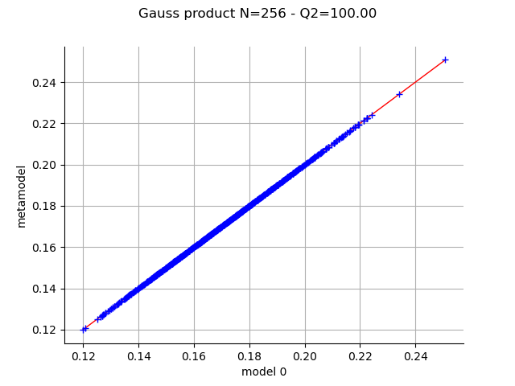
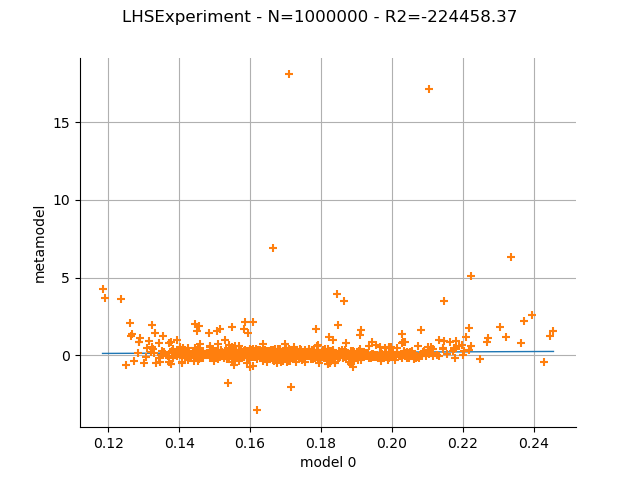
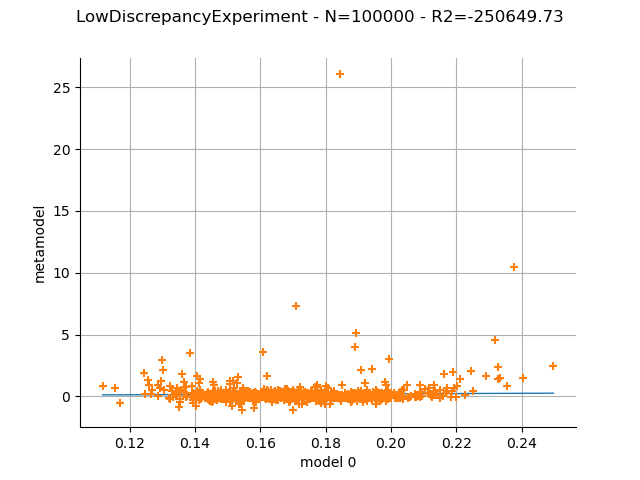

Note
Click here to download the full example code
Create a polynomial chaos metamodel by integration on the cantilever beam¶
In this example, we create a polynomial chaos metamodel by integration on the cantilever beam example. We choose to evaluate the coefficients of the chaos decomposition by integration using various kinds of design of experiment:
Gauss product
Latin hypercube sampling
Quasi Monte Carlo with a Sobol’ sequence
We will compare the results obtained on each design.
from openturns.usecases import cantilever_beam
import openturns as ot
import openturns.viewer as otv
ot.Log.Show(ot.Log.NONE)
We first load the model from the usecases module :
cb = cantilever_beam.CantileverBeam()
In this example we consider all marginals independent.
They are defined in the CantileverBeam class:
dist_E = cb.E
dist_F = cb.F
dist_L = cb.L
dist_I = cb.I
distribution = cb.independentDistribution
We load the model.
dim_input = cb.dim # dimension of the input
dim_output = 1 # dimension of the output
g = cb.model
Create a polynomial chaos decomposition¶
We create the multivariate polynomial basis by tensorization of the univariate polynomials and the default linear enumerate rule.
multivariateBasis = ot.OrthogonalProductPolynomialFactory(
[dist_E, dist_F, dist_L, dist_I])
In this case, we select P using the
getBasisSizeFromTotalDegree() method,
so that all polynomials with total degree lower or equal to 5 are used.
This will lead to the computation of 126 coefficients.
totalDegree = 5
enum_func = multivariateBasis.getEnumerateFunction()
P = enum_func.getBasisSizeFromTotalDegree(totalDegree)
print(f"P={P}")
P=126
We select the FixedStrategy truncation rule, which corresponds to using
the first P polynomials of the polynomial basis.
adaptiveStrategy = ot.FixedStrategy(multivariateBasis, P)
We begin by getting the standard measure associated with the multivariate polynomial basis. We see that the range of the Beta distribution has been standardized into the [-1,1] interval. This is the same for the Uniform distribution and the second Beta distribution.
measure = multivariateBasis.getMeasure()
print(f"measure={measure}")
measure=ComposedDistribution(Beta(alpha = 0.9, beta = 3.5, a = -1, b = 1), LogNormal(muLog = 5.69881, sigmaLog = 0.0997513, gamma = 0), Uniform(a = -1, b = 1), Beta(alpha = 2.5, beta = 4, a = -1, b = 1), IndependentCopula(dimension = 4))
The choice of the GaussProductExperiment rule with 4 nodes
in each of the 4 dimensions leads to evaluations of the model.
marginalSizes = [4] * dim_input
experiment = ot.GaussProductExperiment(distribution, marginalSizes)
print(f"N={experiment.getSize()}")
X, W = experiment.generateWithWeights()
Y = g(X)
N=256
We now set the method used to compute the coefficients; we select the integration method.
projectionStrategy = ot.IntegrationStrategy()
We can now create the functional chaos.
algo = ot.FunctionalChaosAlgorithm(X, W, Y, distribution,
adaptiveStrategy, projectionStrategy)
algo.run()
Get the result
result = algo.getResult()
The getMetaModel() method returns the metamodel function.
metamodel = result.getMetaModel()
Validate the metamodel¶
Generate a new validation sample (which is independent of the training sample).
n_valid = 1000
X_test = distribution.getSample(n_valid)
Y_test = g(X_test)
The MetaModelValidation class validates the metamodel
based on a validation sample.
val = ot.MetaModelValidation(X_test, Y_test, metamodel)
Compute the  predictivity coefficient.
predictivity coefficient.
Q2 = val.computePredictivityFactor()[0]
Q2
0.9999980369284825
Plot the observed versus the predicted outputs.
graph = val.drawValidation()
graph.setTitle(f"Gauss product N={experiment.getSize()} - Q2={Q2*100:.2f}")
view = otv.View(graph)

Now repeat the same process on various designs.
def draw_validation(experiment):
projectionStrategy = ot.IntegrationStrategy(experiment)
algo = ot.FunctionalChaosAlgorithm(
g, distribution, adaptiveStrategy, projectionStrategy)
algo.run()
result = algo.getResult()
metamodel = result.getMetaModel()
X_test = distribution.getSample(n_valid)
Y_test = g(X_test)
val = ot.MetaModelValidation(X_test, Y_test, metamodel)
Q2 = val.computePredictivityFactor()[0]
graph = val.drawValidation()
graph.setTitle(f"{experiment.__class__.__name__} - N={experiment.getSize()} - Q2={Q2*100:.2f}")
return graph
Use an LHS design.
experiment = ot.LHSExperiment(distribution, int(1e6))
graph = draw_validation(experiment)
view = otv.View(graph)

Use a low-discrepancy experiment (Quasi-Monte Carlo).
sequence = ot.SobolSequence()
experiment = ot.LowDiscrepancyExperiment(sequence, distribution, int(1e5))
graph = draw_validation(experiment)
view = otv.View(graph)
otv.View.ShowAll()

Conclusion¶
With the Gauss product rule the coefficients are particularily well computed since the Q2 coefficient is excellent, even with the relatively limited amount of simulation (256 points). On the other hand the LHS and low-discrepancy experiments require many more points to achieve a Q2>99%.
Total running time of the script: ( 0 minutes 15.097 seconds)